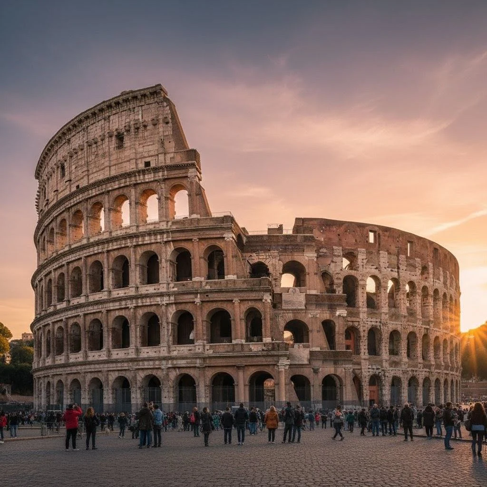
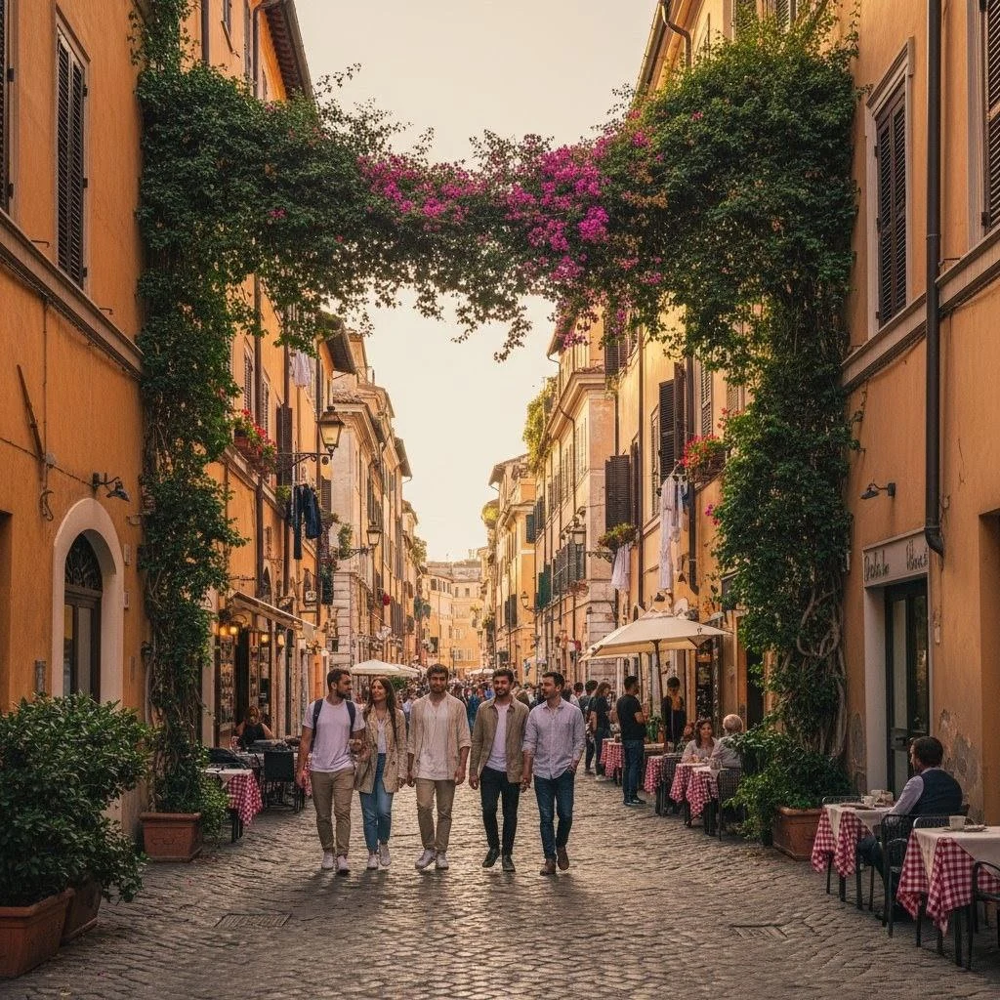
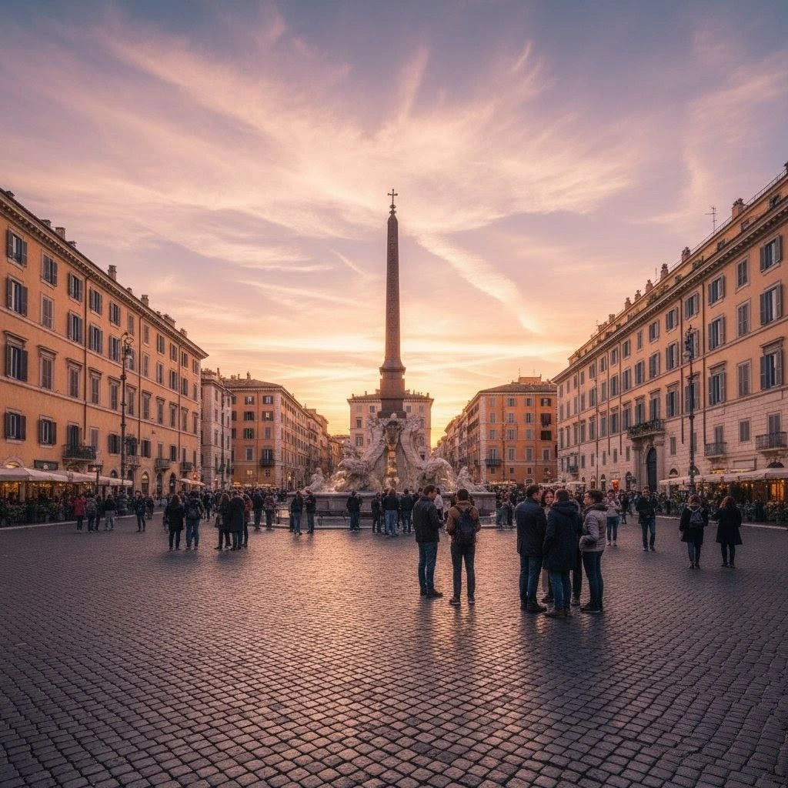

Roma Clásica — 7 días
Historia, arte y gastronomía. Ideal para viajeros desde Venezuela que desean lo esencial de la capital italiana en una semana.

Resumen del viaje
Visitas guiadas al Coliseo, Foro Romano y Vaticano; tiempo para degustar platos tradicionales y paseos por Trastevere.
Itinerario día a día
- Día 1: Llegada a Roma, traslado y paseo de orientación.
- Día 2: Coliseo, Foro Romano y Palatino con guía local.
- Día 3: Ciudad del Vaticano: Basílica y Museos Vaticanos.
- Día 4: Taller de cocina y tarde libre en plazas históricas.
- Día 5: Excursión a Pompeya (opcional).
- Día 6: Ruta gastronómica y mercado local.
- Día 7: Mañana libre y regreso.
Incluye
- Alojamiento según el paquete
- Traslados aeropuerto – hotel – aeropuerto
- Guía en español en días señalados
No incluye
- Vuelos internacionales desde Venezuela (gestión opcional)
- Entradas opcionales no mencionadas
Precio referencial: desde USD 950 (sujeto a disponibilidad)
Solicitar cotizaciónGalería

